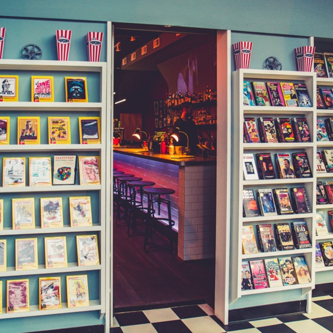
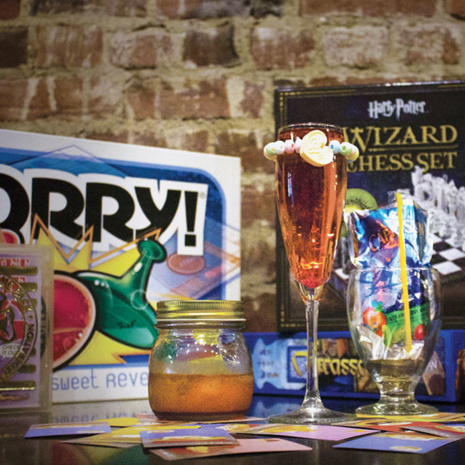
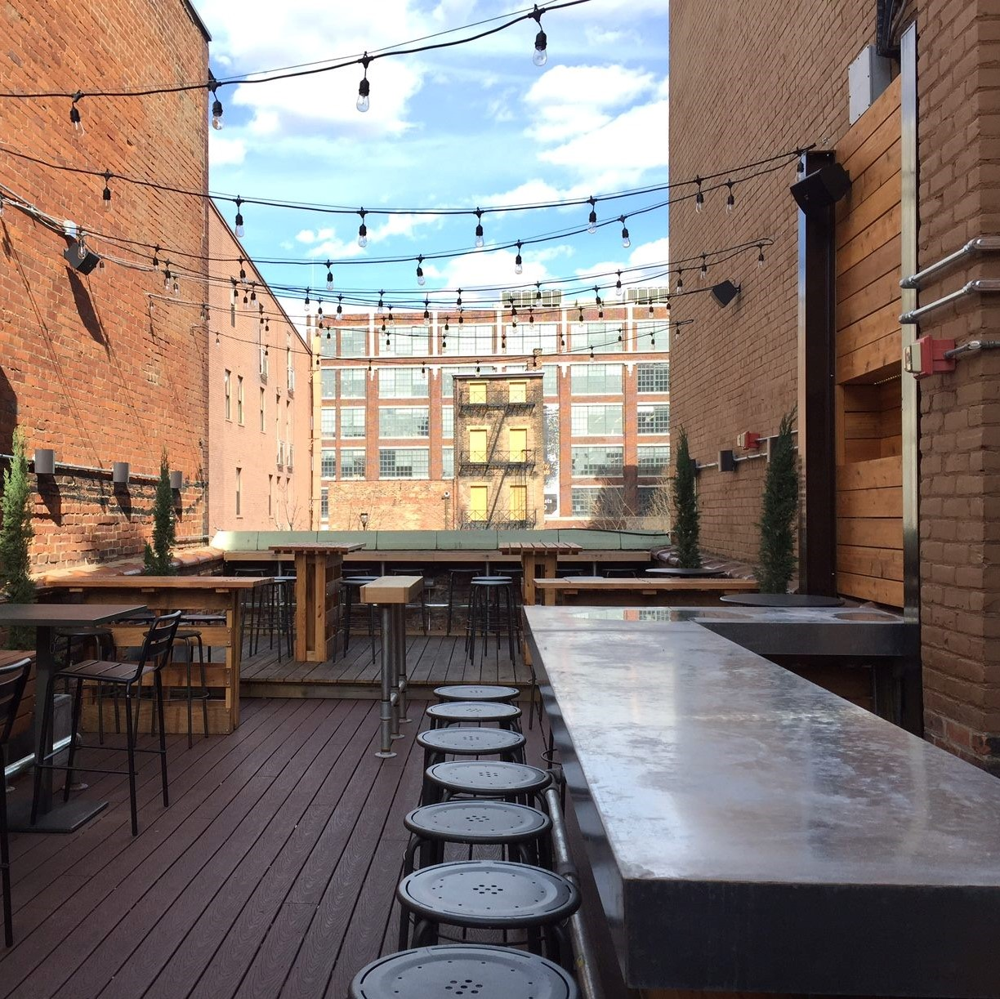
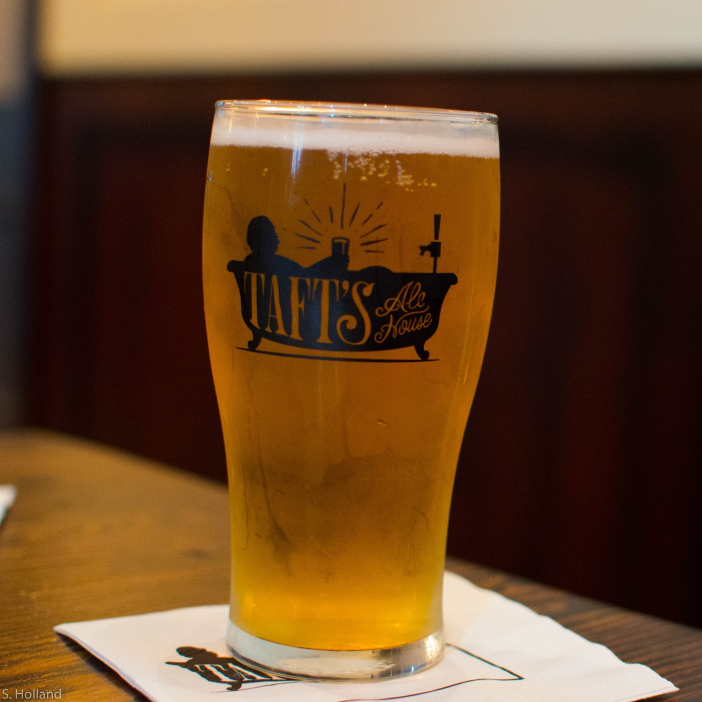
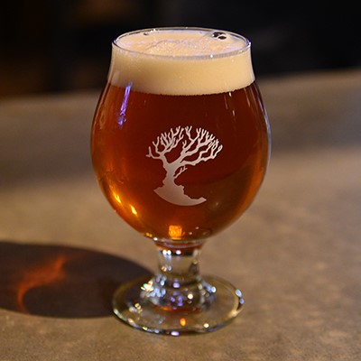
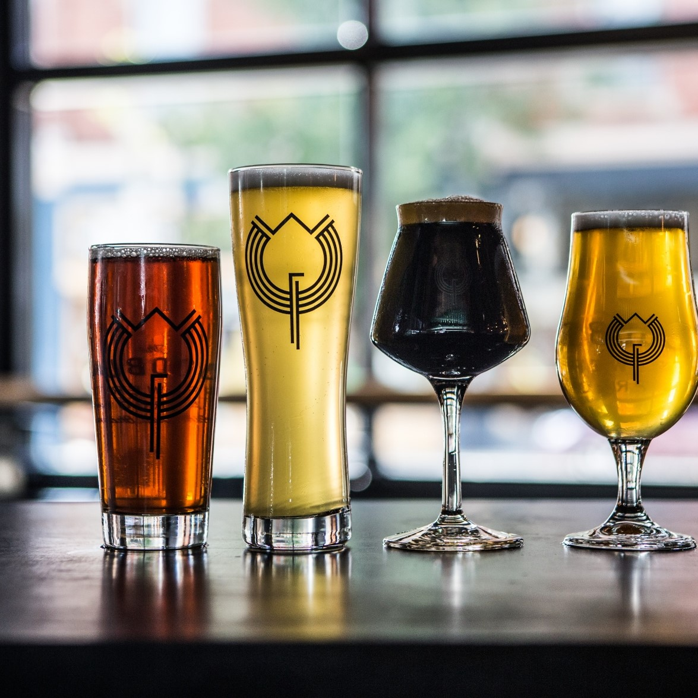
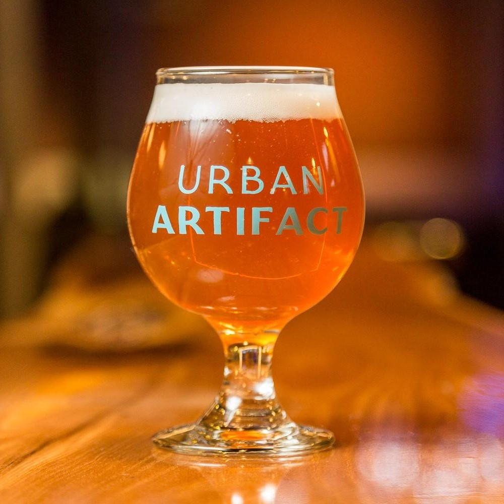
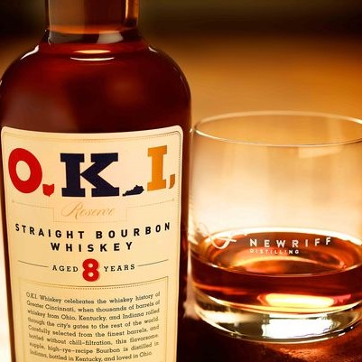

Cincy's Finest
About
Distilleries
Breweries
Bars
Have a drink in our city
Bars

Video Archive - A "video store" inspired by the creativity of director Quentin Tarantino
Sundry and Vice - An apothecary themed cocktail bar

The Rook - A board game parlor

Krueger's Tavern - A German/European tavern with a rooftop view
Breweries

Taft's Ale House - A three level brewery built in a restored Protestant church

MadTree Brewing - A Cincinnati classic brewery known for their wide selection of beers

The Woodburn Brewery - Fresh, innovative beers built on the city's beer heritage

Urban Artifact - A craft brewery with a taproom, full bar, and live music venue
Distilleries
Northside Distilling Co. - Mashing, fermenting, distilling, bottling, and aging bourbon can be seen right on location.

New Riff Distilling - Family-owned, Kentucky bred, a New Riff on old tradition.